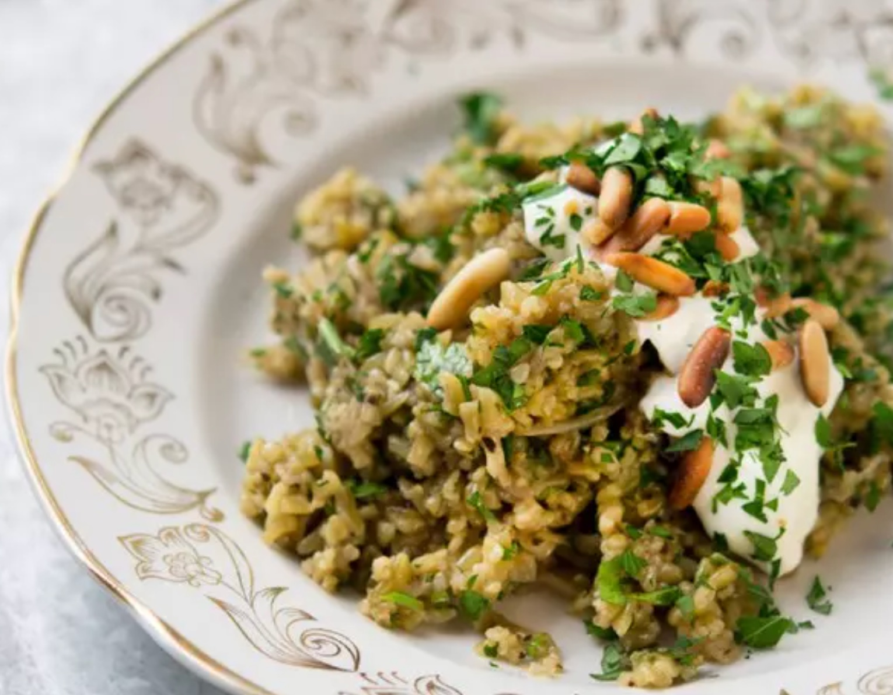

Freekeh Pilaf
Return to Home

Description
Today, freekeh is produced and sold commercially, whole or cracked, we use it for making pilaffs, in salads and for serving with lamb or chicken. It's earthy flavour and slightly coarse texture go particularly well with sweet spices.
Serving Size: 2-4 beautiful people
Ingredients
- 2 medium onions, thinly sliced
- 25g butter
- 1 tbsp olive oil, plus extra to finish
- 150g freekeh (or bulghar wheat)
- ¼ tsp ground cinnamon
- ¼ tsp ground Allspice
- 270ml good-quality reduced vegetable stock
- 100g Greek yoghurt
- 1 ½ tsp lemon juice
- ½ garlic clove, crushed
- 10g parsley, finely chopped, plus extra to garnish
- 10g mint, finely chopped
- 10g coriander, finely chopped
- 2 tbsp pine nuts, toasted and roughly broken
- salt and black pepper
Steps
- Place the onions, butter and olive oil in a large heavy-based pot and sauté on medium heat, stirring occasionally, for 15–20 minutes. or until the onion is soft and brown.
- Meanwhile, soak the freekeh in cold water for 5 minutes. Drain in a sieve and rinse well under cold running water. Drain well.
- Add the freekeh and spices to the onions, followed by the stock and some salt and pepper. Stir well. Bring to the boil, then cover, reduce the heat to a bare minimum and leave to simmer for 15 minutes. Remove the pan from the heat and leave it covered for 5 minutes. Finally, remove the lid and leave to pilaf to cool down a little, about another 5 minutes.
- While you wait, mix the yoghurt with the lemon juice, garlic and some salt.
- Stir the herbs into the warm (not hot) pilaf. Taste and adjust the seasoning. Spoon onto serving dishes and top each portion with a generous dollop of yoghurt. Sprinkle with pine nuts and parsley and finish with a trickle of olive oil.
Return to Home